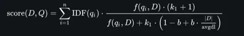
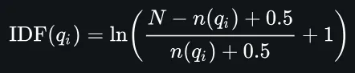
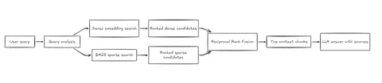

Adding Rank Fusion to my RAG retrieval logic
By Sukalyan RoyPublished Updated 10 min read

In the previous part, we explored Agentic RAG as an evolution of the traditional Retrieval-Augmented Generation pipeline:
https://sukalyanroy.hashnode.dev/discovering-rags-2-what-is-agentic-rag
TL;DR #
-
I moved the RAG project from semantic-only retrieval toward hybrid retrieval.
-
Dense embeddings are still useful for meaning, but BM25 helps with exact terms like MCP, JSON-RPC, stdio, and specific filenames.
-
Reciprocal Rank Fusion combines both rankings without pretending their raw scores mean the same thing.
-
This makes retrieval less fragile, but evaluation and reranking are still the next big missing pieces.
Project status
The chatbot now supports hybrid dense + BM25 retrieval with RRF. It can ingest multiple document types, use Ollama locally, expose an MCP server, and return source-attributed answers. The next work is retrieval evaluation, reranking, and more deliberate agentic control.
A little Review #
Traditional RAG is mostly reactive.
It takes the user’s question, retrieves some relevant chunks, sends them to the LLM, and returns an answer. For simple factual questions, this works pretty well.
But real users rarely ask clean questions.
They ask vague things. They mix multiple intents in one prompt. They refer to previous conversations. They expect answers that may depend on documents, databases, APIs, tools, memory, or even live systems.
And sometimes the answer is not sitting inside one perfect chunk of text. It may be spread across multiple files, hidden behind relationships, or dependent on rules that need some reasoning.
That is why we need Agentic RAG.
Agentic RAG #
Once we add agency to RAG, the system starts looking less like a fixed pipeline and more like a workflow.
There may be a planner agent that breaks the request into smaller steps. A retrieval agent that decides where to search. A reasoning agent that combines evidence. A critic agent that checks whether the answer is actually grounded. There may also be memory, so the system can carry useful information beyond one single conversation.
Some systems do all this with one agent. Others use multiple specialized agents. Some use reflection, where the system checks and improves its own output. Some use tools, where the LLM can call databases, search, calculators, APIs, or code execution.
And when this is combined with knowledge graphs, we get into Agentic GraphRAG.
Graphs #
Normal vector RAG searches for chunks that are semantically similar.
This is useful, but it can treat knowledge like isolated pieces of text.
In many real cases, the relationships matter just as much as the facts.
A company may be connected to subsidiaries, executives, transactions, and regulations. A medical answer may depend on symptoms, medicines, diagnoses, and patient history. An enterprise answer may depend on teams, services, incidents, and documents.
A knowledge graph stores these relationships directly.
So instead of only asking, “Which chunk is similar to this query?”, the system can also ask, “Which entities are connected, and how?”
This is where frameworks like LangGraph become useful. Instead of making the RAG app a straight line, we can model it as a graph of steps. One node rewrites the query. Another retrieves documents. Another calls a tool. Another validates the answer. Another decides whether to continue or stop.
Basically, the workflow becomes more explicit and easier to control.
Tradeoffs #
Of course, agentic systems are not free magic.
They can be slower because they may perform multiple steps. They can be more expensive because each step may call a model or a tool. They can be harder to evaluate because the path to the answer is not always fixed. And they can be harder to control because the system is making decisions at runtime.
So the question is not simply:
“Should we use Agentic RAG?”
The better question is:
“Which parts of the RAG pipeline actually need agency?”
Project Updates #
With that framing in mind, the next step is about identifying which parts of my own RAG pipeline are beginning to need more agency: query analysis, retrieval strategy, validation, memory, and orchestration.
And i'll make an update about that once we're done going through the rest of the changes made since the last post. The updates themselves might take more than one post.
If I had to summarize the entire state of the project right now, it would be this:
A local-first Retrieval-Augmented Generation chatbot.
Documents (PDF, DOCX, TXT, MD, JSON, CSV, web URLs) are chunked, embedded against an Ollama model, and stored in a pickled cache.
At query time the user's question is validated and analyzed, the top-K most relevant chunks are retrieved by a hybrid of dense (cosine) and sparse (BM25) search fused with reciprocal rank fusion.
The LLM (also Ollama by default) is prompted with the context plus role-conditioned system prompt, and the answer is returned with source attribution.
The whole engine is also exposed as a Model Context Protocol server over JSON-RPC stdio so any MCP-compatible client can drive it, and there are two Streamlit UIs — one talking to the MCP server, one importing the engine directly.The core logic, is in src/core/final_rag_system.py, which acts as an orchestrator. When you open it, the first thing you will see after the imports and some callback helper function, is the class of FinalRagChatbot.
Now this was a name i came up with out of frustration as I kept procrastinating my previous projects, but there are still many many phases left to be improved and further worked upon.
The class itself calls the functions for all the default parameter tuning, and cache path resolution and more. Contains all the methods needed to make the main chat loop work.
The main section of the code is the entire chat turn, and if we understand that, we can branch out into the several components part by part to understand them specifically.
There are some tracking and metrics related thing at the top of this function but the main logic starts as follows:
-
Validating the input
against harmful patterns like code execution; or when someone asks a security related question but does not have the authorization, via the
validate_inputandcheck_permissionsfunctions.
Both of these are keyword based, might try some further semantic checks here later. -
Then the
analyze_queryfunction
uses some hardcoded rules and heuristics to convert potentially vague queries, and expand them out into better representations.For example, expanding out certain popular acronyms, check against common keywords to figure out whether it's asking for a tutorial or a report or troubleshooting etc, Isolate out the entities like Proper nouns and acronyms.
And based on all this, it adds some extra lines of instruction to make the response better.
-
Then we retrieve the relevant documents based on some logic.
This was pure semantic search before using vector embedding and cosine similarity, but has been changed since to use a hybrid system (Described later in this post) -
When asking the LLM to generate the response, we also fetch a system prompt that's in the codebase, which is sent along with our documents and instructions.
-
If no relevant documents found then we just reply a message for that and end the turn, if not then we continue.
-
If Streaming is enabled we call to the streaming response function, otherwise we generate the whole response at once and then return it.
-
Also we remove source attribution from the LLM response itself because our pipeline explicitly marks it separately.
-
After that, we update the conversation history so the latest turn is in the context for the next one.
-
Finally return the response with the updated metrics.
Hybrid Search with BM25 #
| Retrieval style | What it is good at | Where it fails |
|---|---|---|
| Dense/vector search | Finds semantically related chunks even when the wording differs | Can miss exact technical terms, filenames, commands, acronyms |
| BM25 | Rewards exact keyword matches and rare terms | Does not understand meaning beyond lexical overlap |
| Hybrid + RRF | Combines semantic and lexical ranking without mixing incompatible raw scores | Needs tuning and evaluation to know whether it actually improves answers |
If you've been following the previous posts, you know that the first thing i started with, was vector embedding and cosine similarity.
Related to vector spaces? Check. Using embedding models that are LLM based? Check!
So the next step would obviously be something even more sophisticated, even more enmeshed within the AI ecosystem right? Well, not quite.
To take several steps ahead, we need to take a few steps back, almost 40+ years ago.
We reach the age when the first personal computers were getting popular, but enterprise workloads were still the dominant use.
The internet was still not a thing yet, but people wanted to figure out how to search for keywords smartly across large volumes of data.
Artificial intelligence was in a limbo, one of the several AI winters as people talk about it, and it was the perfect time for statistical methods.
From this environment came out several Statistical keyword search algorithms, one of which, along with it's variants would go on to dominate search as Internet became a big deal.
Of course you build up your corpus of data by crawling and what not, but once you have it crawled, how do you decide which one to fetch? This algorithm comes in here.
This is where BM25, or as it's full name is, Okapi Best Match 25 comes in.
Before we even go into the details, let me give you an example of why do we even care.
Suppose the user asks, “How does MCP integration work in this project?” Dense search may retrieve semantically related chunks about agents or tool use, but BM25 can strongly reward exact terms like “MCP,” “JSON-RPC,” and “stdio.” Hybrid search lets the system benefit from both semantic similarity and exact keyword matching.
Another example: The main reason why i started this project was that I wanted something to summarize my college notes for me, and act essentially as my tutor.
When this project began, there was neither NotebookLM nor Study mode in Chatgpt or anything similar.
So, quite obviously, once I made this functional, the first thing i did was feed my cybersecurity notes into this system, to try and see how it works. I asked about best security practices for users. But the search was very contrived.
It often tried quoting MCQs that directly mentioned some of the keywords, and on other times, returned documents that have nothing to do with security at all.
The answer could still sound somewhat reasonable, but the retrieved context made it clear that the system was not really understanding what I needed.
This motivated my need for a better retrieval system.
Now, below this you will see two crazy looking formulas that won't make much sense at first, but you do not need to memorize the formula.
The important idea is that BM25 rewards terms that are frequent in a document but rare across the whole corpus, while also adjusting for document length.


You can of course look up tutorials on this online, including wikipedia which has a nice article on what each of these terms mean, but let me give you a crash course.
Essentially, this just codifies a way to calculate different things about a given query, Q. Such as,
-
How frequently does the query word occur in the stored documents as a proportion of the documents? (The TF-IDF terms)
The specificity of a term can be quantified as an inverse function of the number of documents in which it occurs. -
How large or small those documents are? If we don't adjust for this, then we might bias for small documents where the query is perhaps one of the only words, while there can be larger ones which have more meaning, OR vice versa.
Now, moving beyond the formula, it is a lot more important that we can make it work alongside our vector search implementation, how do we do that?
We give the user, or rather the one setting up the configuration, the choice to enable or disable this feature.
The platform by default uses cosine similarity with vector embeddings, but if hybrid search is enabled, then it calls to the hybrid_candidates function.
The dense_candidates function is used in both cases, directly when cosine similarity and indirectly in hybrid. It returns all the documents which pass a certain threshold similarity score.
But we have discussed most of those things already, the core new logic that we need to discuss is how the BM25 algorithm is used in this project.
BM25 Sparse Index Module #
Wraps rank_bm25.BM25Okapi to provide a lexical (sparse) retrieval leg that runs alongside dense embedding similarity. Chunks are tracked by a caller-supplied stable chunk_id so the sparse index can be fused with the dense ranking via reciprocal rank fusion.
BM25Okapi builds its statistics at construction time and has no incremental API, so this wrapper keeps the tokenized corpus in memory and rebuilds the underlying model lazily whenever the corpus changes.
Retrieval Rank Fusion #
In my codebase, it is a separate module in utils.py
def reciprocal_rank_fusion(
rankings: List[List[Any]], k: int = 60
) -> List[Tuple[Any, float]]:
"""Fuse several ranked id lists with Reciprocal Rank Fusion.
Each input is an ordered list of ids (best first). A document's fused score
is ``sum(1 / (k + rank))`` over the lists it appears in, where ``rank`` is
its 0-based position in that list. The constant ``k`` damps the influence of
top ranks so a single list cannot dominate the fusion.
Args:
rankings: List of ranked id lists from each retriever leg.
k: RRF damping constant (typically 60).
Returns:
``(doc_id, score)`` pairs sorted by fused score descending.
"""
scores: Dict[Any, float] = {}
for ranking in rankings:
for rank, doc_id in enumerate(ranking):
scores[doc_id] = scores.get(doc_id, 0.0) + 1.0 / (k + rank)
return sorted(scores.items(), key=lambda pair: pair[1], reverse=True)The code snippet and docstring are lifted straight from my repo, and are mostly self explanatory. Though we can always experiment with the rrf_k damping factor to see if we can squeeze out better results.

Conclusion #
So this update marks an important shift in the project: retrieval is no longer purely semantic. By adding BM25 and RRF, the chatbot can now combine meaning-based search with exact lexical matching. The next step is to improve what happens after retrieval: reranking, evaluation, and eventually more agentic control over the pipeline.
If you are building a small RAG system yourself, try one query that depends on meaning and one query that depends on exact terms. That contrast will tell you faster than any theory whether hybrid retrieval is worth adding.
References #
https://github.com/asinghcsu/AgenticRAG-Survey
https://ankitjswl56.hashnode.dev/beyond-basic-rag-architecting-a-fault-tolerant-agentic-ai-platform
https://theneuralmaze.substack.com/p/agentic-graphrag-for-the-real-world